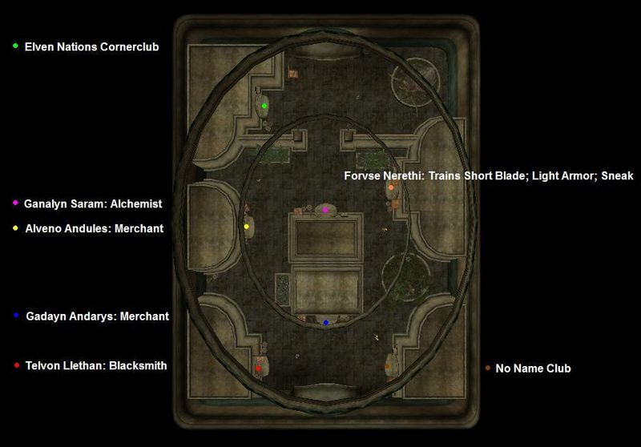

|
Entrance to the Hlaalu Canton |
|
Map of Vivec's Hlaalu Canton |
The Hlaalu Canton is located on the west side of Vivec and is the first structure you encounter if you are traveling overland from Ebonheart. It is owned by House Hlaalu and hosts many services for retainers and visitors alike. Business is business, as they say. House Hlaalu councilman Crassius Curio resides here in his manor. He is a rather peculiar leader...
Outside on the canalworks level, a gondola can take you to the Arena, Foreign Quarter, or Temple cantons. Conveniently close to the gondolier is one of several ramps up to the waistworks, and to the left, due east, is a bridge to the Redoran Canton. Around the outside of the waistworks you will also find ramps upwards to the Plaza level. The Underworks and Canalworks are accessed through the indoor area of the waistworks. A bridge outside the Plaza level also connects to its counterpart in Vivec, Redoran.
The vaults are accessible from Hlaalu, Treasury and the Records. Behind two heavy locked (95 pt. and trapped) bars and guarded by three Ordinators, you'll find the Vaults of House Hlaalu. The treasures here contain a full set of Glass Armor (except for the bracers) and chests with quality weapons, gold and jewels. If you can't find a way in without being caught, you can pick the first lock, pay gold, take the trap off, pay gold, etc (keeping in mind that you'll lose any stolen items you're carrying). Once inside, it is possible to sneak to the valuable items. This can be done with a relatively low sneak level. Another method is to taunt Alen Baren into combat, then kill him for his vault key -- then either pickpocket or taunt and kill the stationary Ordinator past the door for the second vault key.
|  Services in the Plaza |
Services in the Waistworks |
Services in the Canalworks |